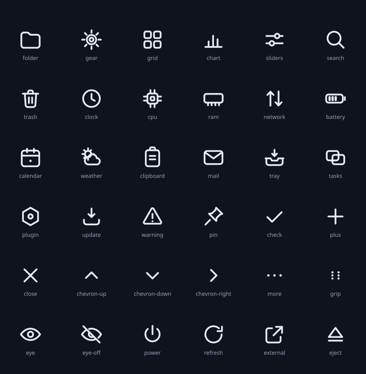
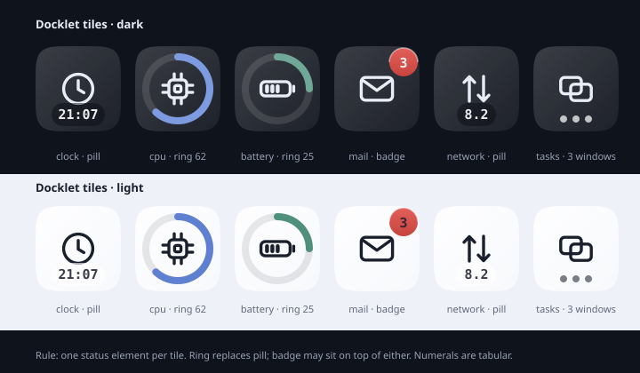

Dark
Light
A 冷调玻璃 默认
绘制玻璃，零原生依赖。深色壁纸与长时间驻留的首选，任何 Windows 版本观感一致。
- 填充62%
- 模糊0
- 倒影25%
DOCK · ART SYSTEM · v1
这套资源定义 Dock 的材质、形状、字形、状态与动效参数。所有数值取自当前 Tauri 实现的真实几何（48 px 图标、62% 填充、1.6 倍放大），因此设计稿与 运行结果不会各说各话。
三套全部随包发布，用户可自由切换。切换只换视觉令牌，不换图标形状、字形与放大曲线。
绘制玻璃，零原生依赖。深色壁纸与长时间驻留的首选，任何 Windows 版本观感一致。
没有底板，图标直接浮在壁纸上。间距放大到 12，浅色壁纸自动加 1 px 反色光环。
真实桌面模糊。模糊区必须裁成药丸，否则会把图标上方留白一起糊掉，比不做更脏。
顺序按绘制先后从下往上。颗粒必须是 ::after 且 pointer-events:none，不能挂在滚动容器上。
#0f131c 为止。一个强调色，一条冷灰阶。语义色只用于阈值和告警，不参与品牌表达。
#0f131c#141826#1c2130#262c3d#394157#5a6480#7d879f#98a1b6#c3cad9#e9edf7#f4f6fb#a9bff0#92adea#7c9be0#6a87c9#5871ad#6fa896#d9a45c#d46a62亮度阈值：L < 0.35 用白字；0.35–0.6 白字 + 1 px 柔影；> 0.6 用 #20242e 深字。
| 用途 | 字号 / 行高 | 字重 |
|---|---|---|
| 提示气泡 | 13 / 16 | 500 |
| 面板正文 | 14 / 20 | 400 |
| 面板强调 | 14 / 20 | 600 |
| 数值 | 18 / 24 | 400 · 等宽数字 |
| 面板标题 | 28 / 36 | 600 · -0.01em |
字体用系统 Segoe UI Variable（标题 Display / 正文 Text），数字用
Cascadia Mono。不打包字体：3 个标签不值得为它增加 200 KB 和一次
字体加载。
图标容器用超椭圆 n=5；Dock 药丸半径 = 高度 / 2。两者都是连续曲率，没有切线折点。
squirclen = 5 · clip-path
border-radius22.37% · 旧实现
ring gauge厚 = R × 0.22
状态件dot 4 · badge 16 · sep 1
左侧两块的差异不在 45° 处（两者几乎重合），而在贴边段：squircle 一直保持近直线，
到很靠近转角才开始加速弯曲，这就是「不内切」的观感来源。
clip-path 会裁掉 drop-shadow，所以阴影必须先画在父层。
24 网格，1.7 描边，圆头圆角。系统入口与插件磁贴共用同一套，不引入第三方图标包。

currentColor，不写死。g-<名词>，状态写 -full 后缀。默认 48 px 图标下的全部关键尺寸。改任何一个，窗口几何都要跟着改。
状态写在图标本体上，不新增容器。同一时刻只允许一个状态叠加层。
| 状态 | 视觉 | 不要做 |
|---|---|---|
| hover | 放大 + 500 ms 后气泡；图标不变色 | 不加底框、不加描边 |
| pressed | 内部图像 scale(0.9)、阴影收短 90 ms | 不缩放整个磁贴 |
| running | 底部 4 px 点，白 60% + 1 px 深环 | 不把图标改成彩色 |
| disabled | 去饱和 + 70% 不透明 | 不隐藏图标 |
| dragging | scale 1.08 / rotate -1.5° / 阴影抬起 | 不改变 DOM 顺序 |
| drop slot | 虚线 accent 16% 底 + 55% 边 | 不留空白无提示 |
一个磁贴只回答一个问题。答案要么是数字药丸，要么是形状（环 / 线），不同时给两个。

| 槽位 | 占用 | 互斥 |
|---|---|---|
| glyph | 24 单位，居中，50% | — |
| ring | 外圈 R = 21，厚 4.6 | 与 pill 互斥 |
| pill | 高 16，底边贴齐 | 与 ring 互斥 |
| badge | 16，右上 (−4, −4) | 可叠加 |
| dots | 3 × 4 px，底边下方 | 可叠加 |
type DockItem =
| { kind: "app"; id; name; icon; running; minimized }
| { kind: "folder"; id; name; items: DockItem[] }
| { kind: "plugin"; id; name; glyph; value?; unit?;
status?: "ok" | "warn" | "crit"; menu?: MenuItem[] }
| { kind: "separator" }
| { kind: "trash"; full: boolean };插件不拥有自己的背景：它的背景永远是 Dock 的玻璃，所以对比度必须按合成亮度算。
只动 transform 与 opacity。放大跟随用 160 ms，离开用 320 ms 回弹——进入要跟手，退出要有质量。
scale(i) = 1 + (peak − 1) × exp(−((d / radius) / falloff)⁴)| 距离 | 倍率 | 观感 |
|---|---|---|
| 0.0 格 | 1.600 | 指针所在 |
| 0.5 格 | 1.562 | 仍在峰顶 |
| 1.0 格 | 1.212 | 邻接抬升 |
| 1.5 格 | 1.003 | 几乎归位 |
| 2.2 格 | 1.000 | 完全静止 |
想让联动更宽，改 magnifyRadiusIcons 到 3.0；改 falloff 会影响峰形，属于行为变更。
| 动作 | 属性 | 时长 | 曲线 |
|---|---|---|---|
| 放大跟随 | transform: scale | 160 ms | signature |
| 离开复位 | transform: scale | 320 ms | spring（过冲 ≤ 3%） |
| 按下 / 松开 | scale 0.9 → 1 | 90 / 120 ms | signature / spring |
| 提示气泡 | opacity + translateY 6 → 0 | 150 / 50 ms | signature / linear |
| 右键菜单 | opacity + scale 0.97 → 1 | 250 / 150 ms | signature |
| 自动隐藏 | translateY 100% → 0 | 200 ms | ease-out |
| 角标弹入 | scale 0.4 → 1 + opacity | 500 ms | spring |
| 启动弹跳 | translateY 0 → −34 → 0 ×2 | 600 ms | spring |
| 拖拽让位 | translateX ±pitch | 200 ms | signature |
| 拖出移除 | opacity 1 → 0 + scale 0.86 | 160 ms | ease-in |
prefers-reduced-motion 时全部替换为 0 ms 或纯 opacity，放大关闭。
这条守卫的优先级高于任何单个效果：新加动画必须先在 tokens/motion.css 里被它覆盖。
实色面板，不用玻璃。分成五栏；外观改动即时预览，300 ms 防抖落盘。
现有实现的四栏是 Appearance / Behaviour / Apps / Advanced。建议拆成五栏：Apps 与
Extensions 并列，Advanced 里的重置与版本信息归到 About。字段映射见 README.md §4。
底部是首版唯一实现。左右两侧先给美术规格，行为未实现前不要放出设置项。
侧边时 transform-origin 指向屏幕内侧，放大仍然「长向桌面」而不是长向屏幕外。
运行点改到内侧边缘，自动隐藏的收起条变成 2 px 竖条。
所有资产是纯文本，可直接进 git，也可单独交给设计师。
| 文件 | 内容 | 接入方式 |
|---|---|---|
tokens/material.css | 色阶、玻璃四层、浅色、亚克力、阴影 | 作为默认值层引入 |
tokens/motion.css | 时长、曲线、语义动画、降级 | 直接替换旧 --spring/--signature |
tokens/icon.css | 几何、squircle、状态件尺寸 | 与 DockMetrics 对齐 |
art/dock-glyphs.svg | 37 个字形 sprite | 内联后 <use href="#g-x"> |
art/shapes.svg | squircle、环、药丸、遮罩 | 取 path 或参考 |
art/docklet-tiles.svg | 六个插件磁贴，深浅两套 | 参考图 |
art/grain.svg | 颗粒纹理与降级写法 | data URI 已在 token 内 |
art/mark.svg | 512 px 产品标记 | 导出 ico / png 用 |
preview/dock.html | 可交互 Dock（真实放大公式） | 设计验收 |
tokens/icon.css 的 squircle——视觉收益最大，行为零风险。tokens/material.css 的色阶，现有 --glass-fill 保持由 JS 计算。Glyph.tsx 的 24/1.7 约定。backdrop-filter 假装亚克力——WebView 里它只能模糊 DOM，模糊不到桌面。